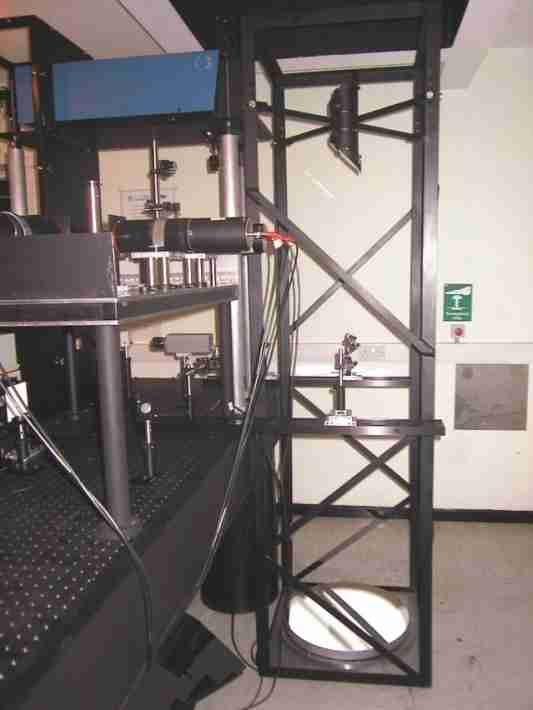
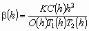
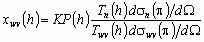

The Chilbolton UV Raman lidar system
The UV Raman lidar system at Chilbolton, England (51.1445°N, 358.563°E) is a high power, five channel Raman lidar system designed to make simultaneous measurements of attenuated lidar backscatter coefficient, humidity mixing ratio and temperature as a function of height. Two datasets are published on the BADC website: attenuated lidar backscatter coefficient and humidity mixing ratio. The attenuated backscatter coefficient is measured using the elastically scattered radiation. At this wavelength, elastically scattered light from both molecules and aerosols is detected. The humidity mixing ratio is measured using the much weaker Raman (inelastically) scattered light from water vapour and nitrogen molecules. Currently the temperature measurements are under development and data are not published.
The system is vertically pointing. It is operated on a case-study basis. Since the most generally useful data are obtained in conditions of either clear skies or high cloud only, it is usually only operated under these conditions. The high power laser incorporated in the system makes low altitude Raman water vapour measurements possible during daylight hours, and many of the published data were collected under such conditions.
| Parameter | Variable Name | Value |
| Transmitted wavelength | transmit_wavelength | 354.7 nm |
| Received wavelengths | receive_wavelength_1 | 354.7 nm (elastic) |
| receive_wavelength_1 | 407.8 nm (water vapour vibrational Raman) | |
| receive_wavelength_2 | 386.7 nm (nitrogen vibrational Raman) | |
| 353.0 nm, 353.9 nm (nitrogen + oxygen rotation Raman for temperature) | ||
| Pulse energy | lidar_pulse_energy | 0.2 J |
| Pulse repetition rate | lidar_pulse_frequency | 50 Hz |
| Transmitted beam diameter | lidar_beam_diameter | 0.1 m |
| Receiver mirror diameter | lidar_mirror_diameter | 0.46 m |
| Transmitted beam divergence | lidar_beam_divergence | 0.0055° |
| Receiver field of view | lidar_field_of_view | 0.028° |
| Beam elevation | lidar_beam_elevation | 90° |
| Latitude | latitude | 51.4445°N |
| Longitude | longitude | 358.5630°E |
| Height above mean sea level | lidar_height_amsl | 84 m |
Raman scattering is an inelastic quantum-mechanical scattering process, in which the frequency of scattered radiation is changed as a result of the interaction of the photon with the energy levels of the molecules. The frequency change is a characteristic of the scattering molecule, which makes it possible to separate scattering from different molecular species.
The relationship between the measured lidar return and the lidar backscattering coefficient is given by
 (1)
where h is the height of the measurement, b(h) is the lidar backscattering coefficient, C(h) is the measured signal, O(h) is the fraction of the transmitted beam visible to the receiver (increases from zero at the lidar system to a maximum of 1), T1(h) is the transmittance of the atmosphere for outgoing radiation to height h, T2(h) is the transmittance of the atmosphere for returning radiation from height h and K is a calibration constant. The atmospheric transmittance is a function of wavelength. For elastic scattering T1(h) and T2(h) are equal, but for Raman scattering, where the outgoing and incoming radiation have different wavelengths, they are not.
The calibration constant, K, is determined using the backscattering signal arising from molecular scattering. The backscattering coefficient due to molecular scattering can be calculated if the atmospheric density as a function of height is known, since at these wavelengths molecular scattering can be modelled using Rayleigh scattering theory. There is also an analytical relationship between the attenuation coefficient and the backscattering coefficient, hence T1(h) and T2(h) can be calculated for molecular scattering. The atmospheric density can be modelled using a standard atmosphere model or obtained from atmospheric measurements, such as those from a radiosonde, if available. We have used a standard atmosphere 2, as the uncertainty introduced into the calibration as a result of differences from actual density will be small. The main source of uncertainty is the effect of aerosols present at altitudes below the height used for calibration. At these wavelengths aerosol scattering cannot be treated using Rayleigh scattering theory. This effect is partially overcome by monitoring the calibration coefficient from each day of measurement and noting the aerosol conditions as measured by the co-located Vaisala ceilometer, which is not sensitive to molecular scattering. Days with low aerosol content can then be identified. The calibration coefficient does not change greatly as a function of time, so a value can then be chosen to apply over a period.
The humidity mixing ratio, xwv(h) or mass mixing ratio of water vapour, is given by 1
 (2)
where the subscripts wv and n refer to water vapour and nitrogen respectively, K is a constant of the lidar system relating to the relative sensitivities of the two measurement channels, T(h) is the transmittance of the atmosphere for both the outgoing and returning radiation to height h and ds(p)/dW is the differential back-scattering cross section for Raman scattering of that species. P(h) is the ratio of the signal from Raman scattering from water vapour (at 408 nm) to that from nitrogen (at 387 nm) as a function of height.
These measurements are calibrated by comparison with routine radiosonde releases from Larkhill, approximately 30 km to the west in order to obtain a combined value for all terms except P(h). Although potential exists for differences in conditions between the two sites, monitoring of the calibration whenever lidar measurements are made reduces the effect of these and a calibration factor can be determined.
A secondary method for monitoring the calibration is available. A tungsten halogen light source whose spectral irradiance is known is used to irradiate the detectors. The calibration can then be determined from their responses to this source. This method suffers from some limitations in reproducing the atmospheric measurement optical conditions and hence is more useful for monitoring changes in the calibration than for producing an absolute calibration factor.
Elastic scattering data are presented in the form of attenuated backscattering coefficient (T1(h)T2(h)b(h) in equation 1) as no attempt is made to correct them for atmospheric attenuation, which will result from scattering and absorption by both molecules and aerosol particles. This quantity is commonly used for lidar backscattering data. Correcting for molecular (Rayleigh) scattering is relatively straightforward as it can be calculated from atmospheric density information. For 355 nm radiation, the measured returns from 12 km are approximately 40% of their value if no molecular scattering occurred. Correction for aerosol extinction is more difficult as an independent measure of aerosol attenuation is required. This can be obtained from one of the Raman scattering channels, such as nitrogen.
The raw data are cleaned before further processing. As an analog data acquisition system is used, some interference is seen in the measurements from both the data acquisition cards and also from the laser power supply. This can be measured and subtracted, although in practice some small residual signals can remain. Elastic scattering data are corrected for changes in laser power during their acquisition and calibrated as shown by equation 1. The range normalisation process has the consequence of enhancing residual interference signals at the high altitude end of the profile. These can have a value of typically 1-2 x 10-5 m-1sr-1. Humidity mixing ratio data are calculated from the ratio of the water vapour to nitrogen Raman scattering returns, as indicated by equation 2, so no range normalisation or laser power correction is required. Some uncertainties arise from the residual background signals, particularly at high altitudes where both the scattering signals are small. Care should be taken in interpreting humidity mixing ratio values from altitudes greater than approximately 4 km, especially by day, as small residual background signals can cause significant uncertainties in the measurements. If possible, they should be compared with nearby radiosonde data, such as from Larkhill, also available from BADC.
When clouds are present they attenuate the lidar signals. If they are optically thin to the beam, some signal will be detected from above them. In the case of the attenuated backscattering coefficient they reduce the returns from above the clouds. In the case of the humidity mixing ratio the value derived is not affected, but the profile will be noisier than in the absence of the cloud due to the attenuation of both the water vapour and nitrogen Raman scattering returns. If the clouds are optically thick to the beam the attenuated backscattering coefficient will be measured as zero above them. The humidity mixing ratio will also be measured as zero, but with a large noise amplitude, as both the water vapour and nitrogen Raman scattering returns will be zero.
Water vapour Raman scattering measurements contain a large, slowly varying background due to solar radiation during daylight hours. Nitrogen Raman scattering measurements by contrast contain a small but measurable solar background. The background in the water vapour measurements adds a substantial noise signal, which increases in proportion to the wanted signal when the humidity mixing ratio is small, when there is a larger sky background (such as occurs when the sky appears milky or light and/or intermittent cloud is present), when aerosol attenuation is large or when the laser beam power is low.
Data are recorded at 6 m intervals from 0 to 12288 m and integrated over 20 s time periods (1000 laser pulses). They are not reported below 200 m in either dataset, due to the relatively small and rapidly changing overlap function at these altitudes. Attenuated lidar backscattering coefficient data are reported to the maximum height and the minimum time and height intervals. Humidity mixing ratio data are usually report to 6000 m height, with 24 m height resolution and 5 minute time resolution, due to the much smaller Raman scattering returns, especially from water vapour.
The data are provided as daily files in NetCDF format, together with quicklooks using Portable Network Graphics (PNG) format. In additional to the variables listed in the Parameters, global variables (giving general information about the data) and data variables are defined.
Conventions, title, history, institution, source, comments, references, British_National_Grid_ Reference.
|
Parameter |
Unit |
Variable Name |
Description |
|
Time |
s |
time |
Time at end of measurement, measured from midnight at the start of the current day |
|
Acquisition time |
s |
acquisition_time |
Integrated data acquisition time in each measurement |
|
Height |
m |
height |
Height of measurement |
|
Attenuated lidar back-scattering coefficient |
m-1sr-1 |
atten_lidar_backscatter_coeff |
Lidar backscattering coefficient, attenuated by molecular and aerosol scattering |
|
Humidity mixing ratio |
Dimensionless |
humidity_mixing_ratio |
Mass mixing ratio of water vapour |
If data from the Chilbolton UV Raman lidar are used in any publication or report then an acknowledgement must be given to the Radio Communications Research Unit at the CCLRC Rutherford Appleton Laboratory for providing the data.
If you have any problems obtaining the data, please contact the British Atmospheric Data Centre.
Judith Agnew
UV Raman lidar Project Manager
Radio Communications Research Unit
CCLRC Rutherford Appleton Laboratory
April 2003